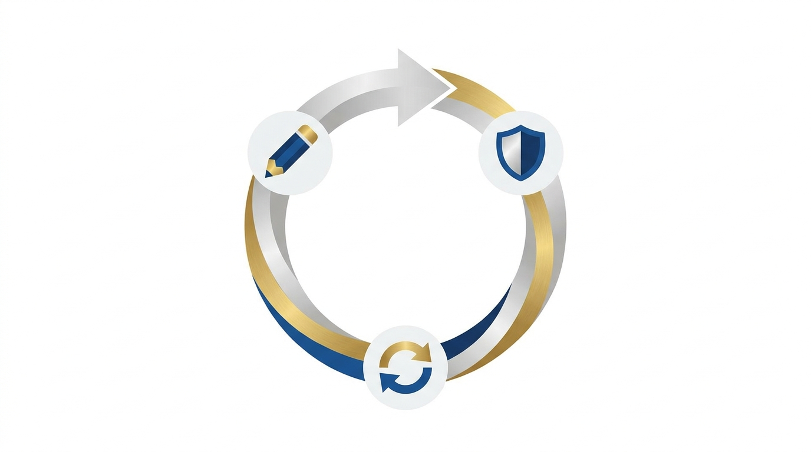

DISPATCH & HITL
Continuity Engine + Self-Healing Optimizer
THE 4-STEP LOOP
Worker draft
→ an agent produces the deliverable.
Continuity Engine reviews
→ catches a rule violation. Returns FAIL with reason.
Self-Healing Optimizer
→ writes state/prompt_optimizations/<agent>_<ts>.json with a hardened prompt.
Re-dispatch with hardened prompt
→ same worker, better instructions. PASS.

TYPICAL FIRST-RUN RESULTS
3.4×
faster-to-green for Episode 2+ when the same dispatch is rerun later.
Self-heal cycle demonstrated across at least 2 distinct rule violations.